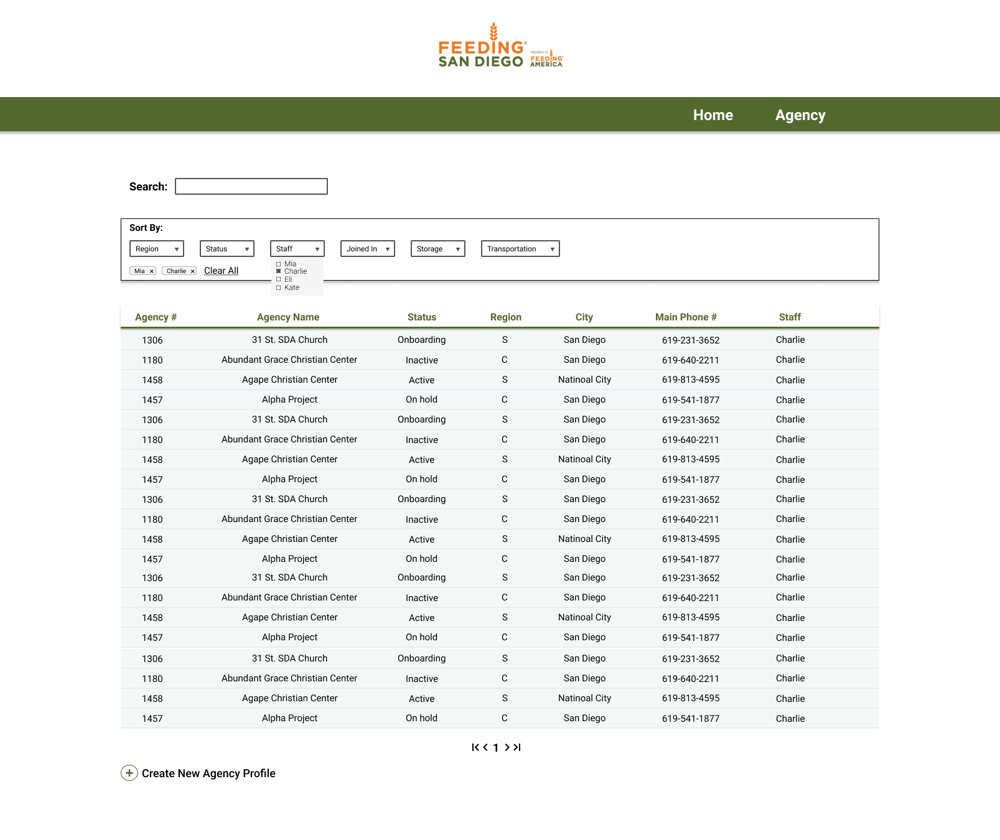
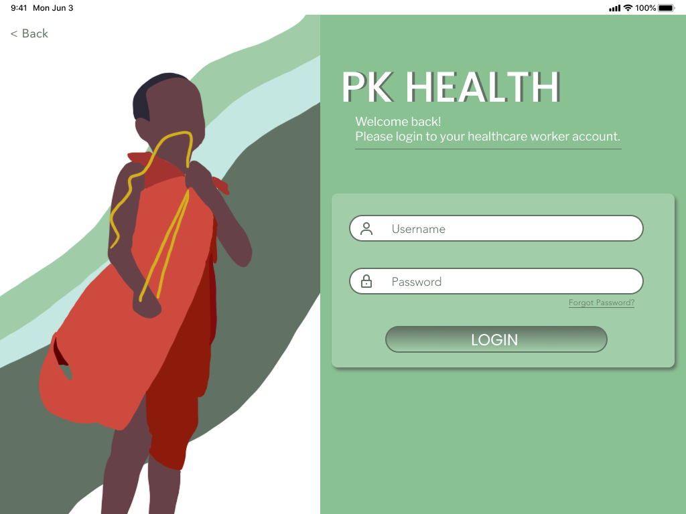
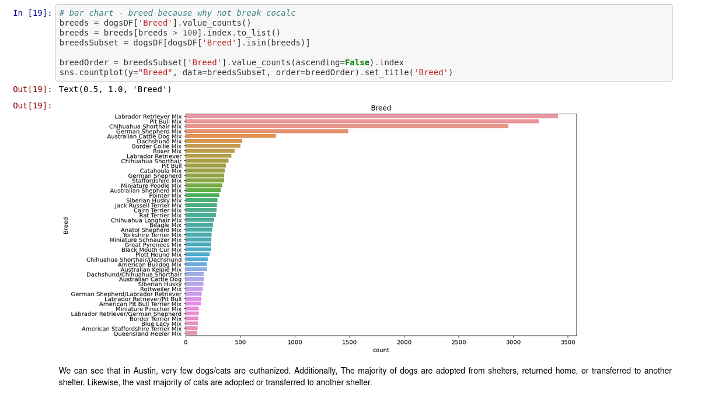
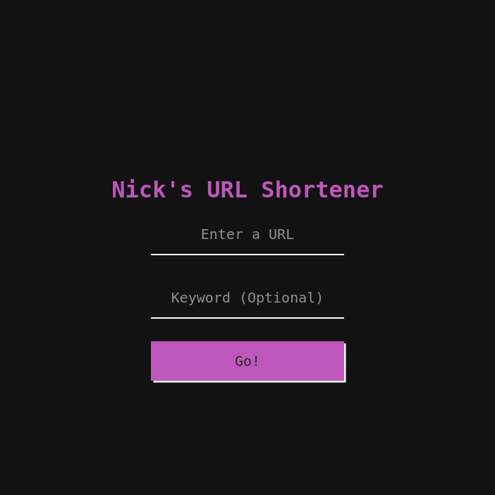
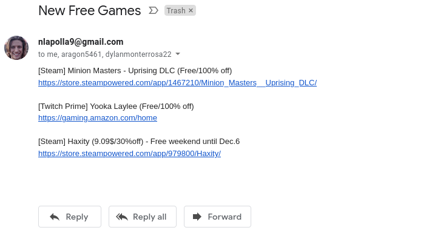

Yip - Community Based Reviews
React, PostgreSQL, Rust
Key Conservation
React Native, Node
Feeding San Diego Distribution App
MongoDB, Express, React, Node
This was a project I worked on through Triton Software Engineering. My development team was paired up with Feeding San Diego and tasked with implementing a distribution app for the organization. The app was designed to be a hub where the organization could check the current status of their agencies and organize events between them.
We were provided a figma mockup of the design and implemented it in React. As we designed the front end, we determined what database operations would be necessary for our pages and organized them into calls for our server. These calls were all handled on a node server running express that passed our agency information through a MongoDB database.
Project Kiliminjaro Health
Human-Centered Design
This project came about through a class offered at UCSD by the Global Ties program. In this class, my group and I were paired with the nonprofit organization Project Kiliminjaro (founded by UCSD students). Project Kiliminjaro offers educational courses in women's health, hygeine, and disease prevention in rural Tanzania. They needed us to create a method of evaluating the success of their programs so they could identify where best to direct their efforts.
We designed a system of community kiosks that Project Kiliminjaro's field team could use to give to Tanzanians in the communitys they were operating in. We designed an application for these kiosks that made use of Qualtrics to allow the organization to create, distribute, and analyze the data they were accumulating through their evaluations. Our application also was made to store the survey data offline on the kisok tablets so that the data could be perserved during times where the team operated without internet.
This was a challenging project that changed my perspective on design. Our solution to Project Kiliminjaro's problem came from constantly redefining the problem and iterating on designs with them directly. It was an incredibly effective design process that was only possible through truly understanding the perspective of those that would use our solution and empathizing with their problems on a deep level.
Austin Animal Shelter Outcomes
Python, Jupyter Notebook, Pandas
In my introduction to data science class, I worked with a team that was very interested in how to use data analysis to help animal shelters increase adoptions and decrease euthanization. We found an open source dataset called "austin-animal-center-outcomes.csv" and found a wealth of data about animal shelter intake in Austin, TX. More crucial to our project, we had the outcome of each animal taken in by the shelters.
We used the Pandas library for Python in a jupyter notebook to apply all of the machine learning and statistics we had learned in the class to our dataset. We explored correlations between adoption rate and unemployment to discover if covid had a noticable impact on adoptions. We also looked at how factors such as age, breed, and sex impact whether an animal is adopted or euthanized.
Personal URL Shortener
HTML/CSS, Javascript, Node, Express, MongoDB
This was one of my first full stack projects. I created it after being annoyed with many of the free to use url shorteners on the internet. These options often lacked a keyword functionality or keywords I wanted were unavailable. Also, by nature of how many people used them, sometimes the urls they generated were not as short as I wanted! The natural remedy was to create my own full stack web app hosted on my own database where I have complete control over which urls are shortened through my site!
By far my biggest takeaway from this project was the best way to learn new technologies is by doing. You can read all the node and express tutorials you want telling you how to setup requests, but it won't click until you do it with your own app. More than this, creating something that you want to use will be naturally motivating. You want to work through all the challenges in development because on the other side is a url shortener you can use and share with your friends!
Please feel free to use it and share it with your friends! It's live at ncks.link
Automation Scripts
Python, MongoDB, Linux
For a long time I've had my RaspberryPi lying around and collecting dust. If you don't know, a RaspberryPi is a fantastic little $35 computer that can run Linux. The possibilities for projects with one of these is endless, but I found it absolutely excellent for automated email sripts.
I created a python script that uses the Reddit API to fetch the top posts on /r/gamedeals. In the script, I filter these posts to only include free promotions. I then email myself and my friends a list of these posts with links. Using the cron program in linux I set this script to run at noon daily. My raspberrypi just sits and gathers any free games it finds every day. Sometimes I even forget about it and get a surprise email from myself with free games!
This project really taught me the power of having a dedicated machine to just run automated tasks. Since this endeavor, I have expanded the idea to run scripts that alert me to deals and saves them into a MongoDB database so that I can identify price trends and look back on the previous teals the script found. My $35 machine has more than paid for itself with the endless cron jobs I run on it daily!